Traces of Absent Things
Degree project (installation of nine works, takeaway booklet with essay; edition of 30)
Bases 17.5 x 23"
Works various sizes
2015
Traces of Absent Things is my semester-long thesis investigation of the index as form and language, noun and verb, score and semiotic sign (a signifier that points back to an absent source). The final project took the form of an installation of nine works and a takeaway booklet containing the essay I wrote on the topic.

 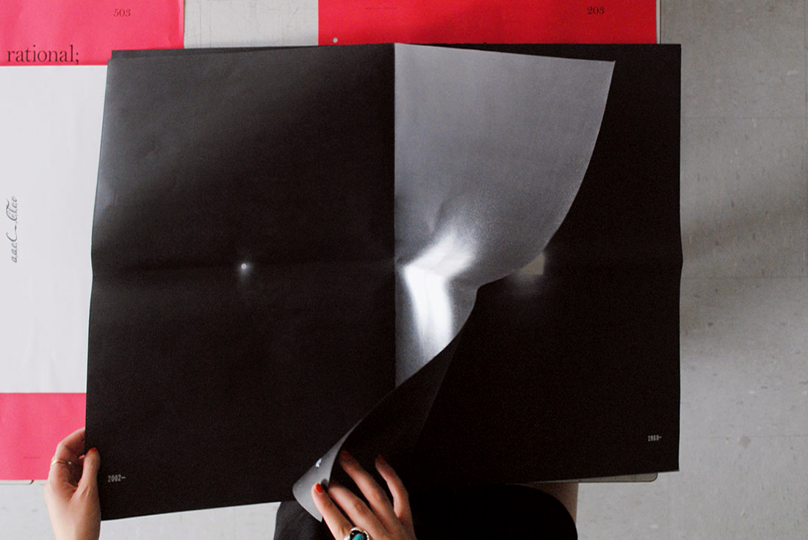
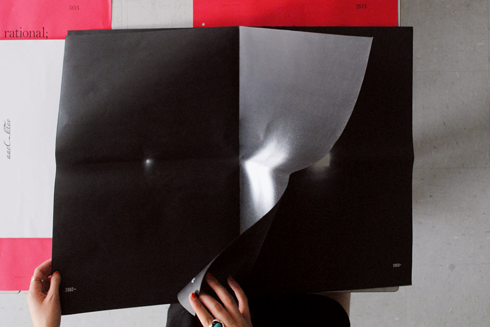


 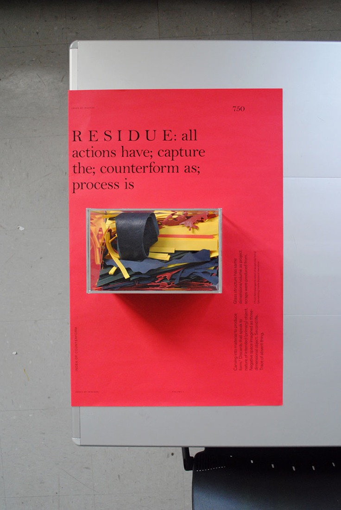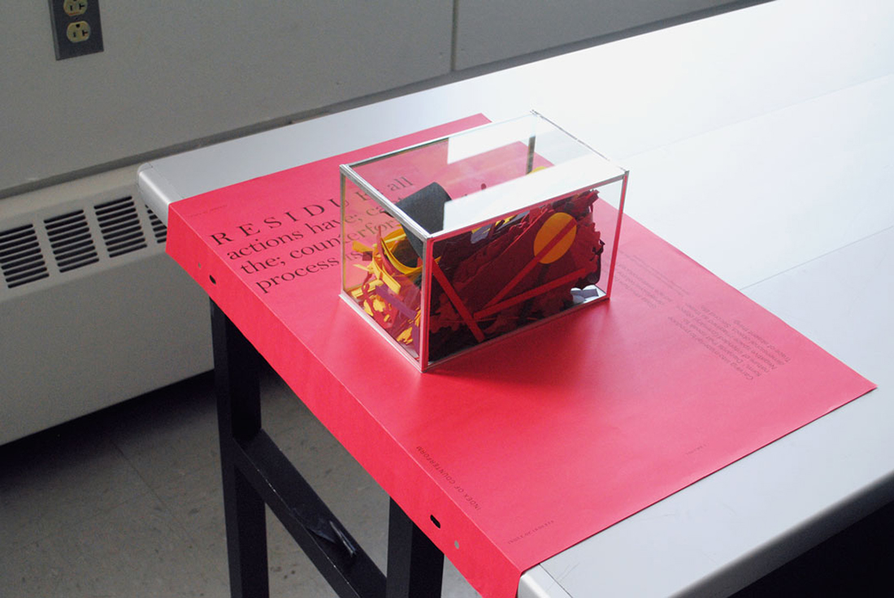
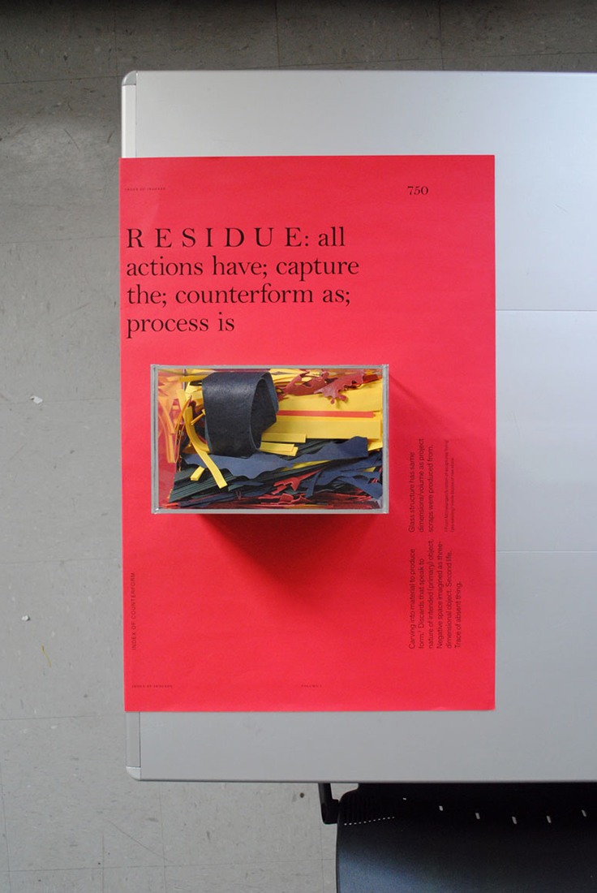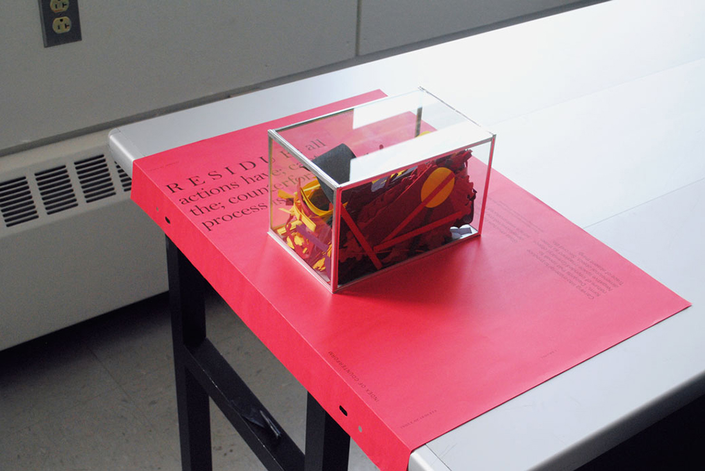


 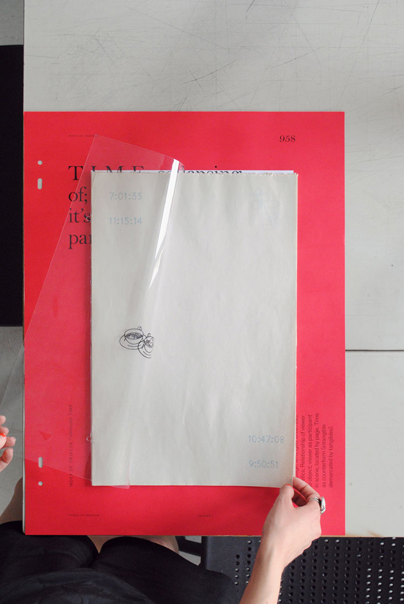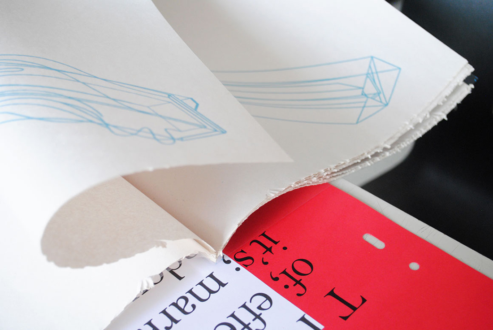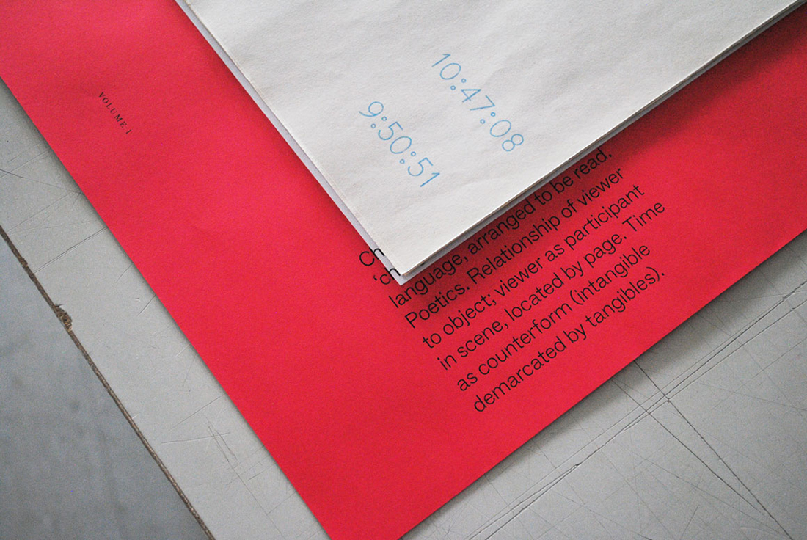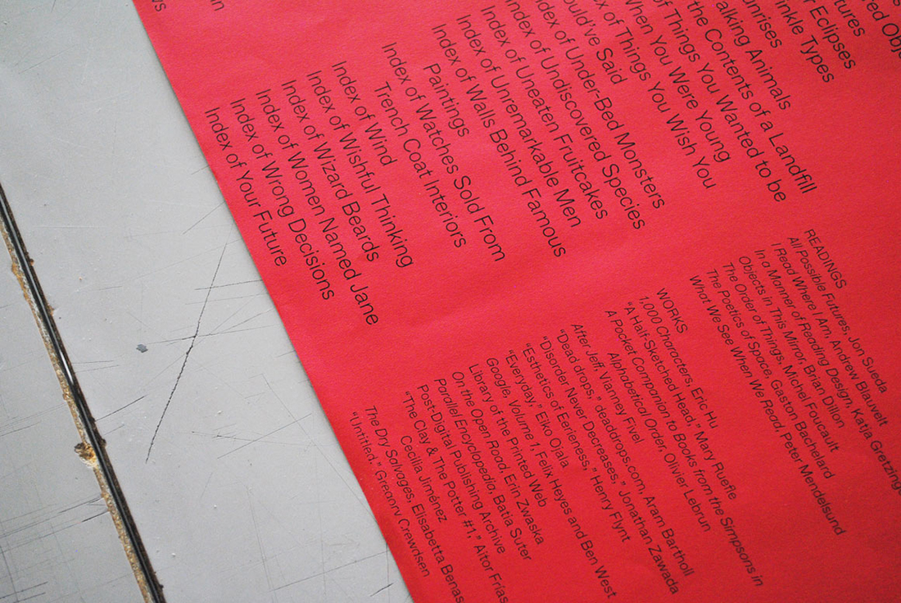
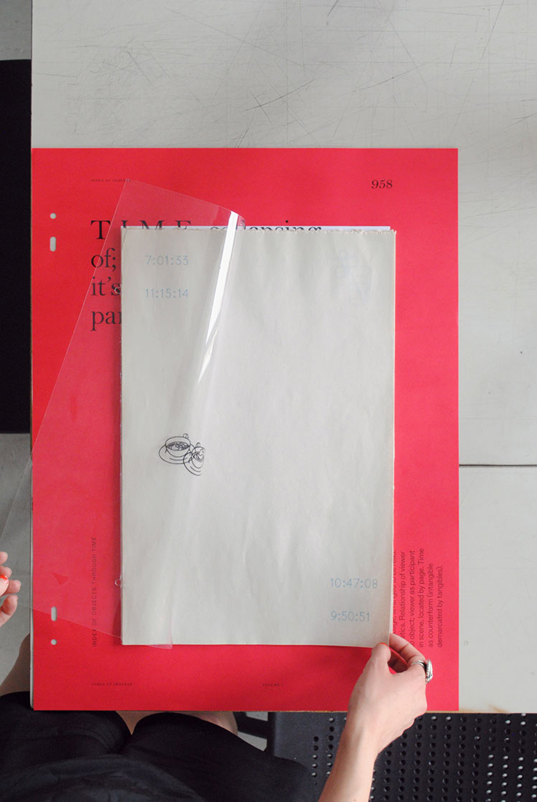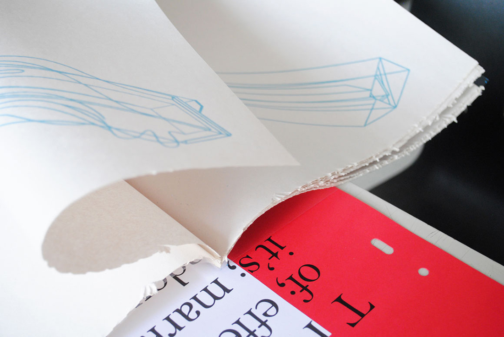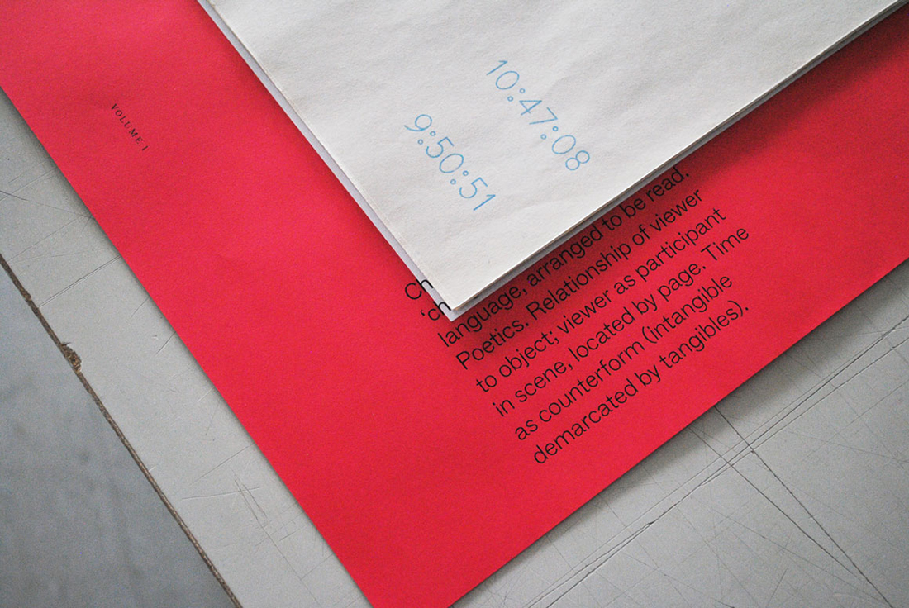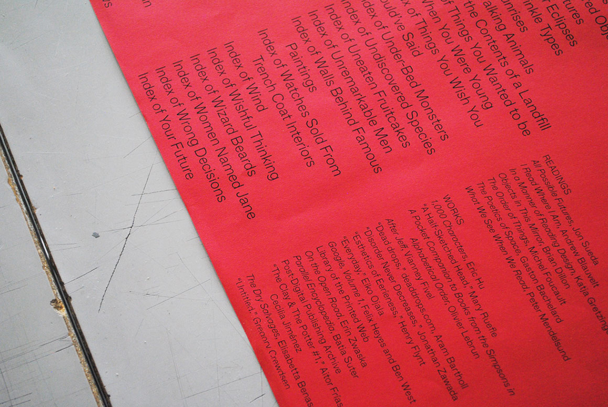